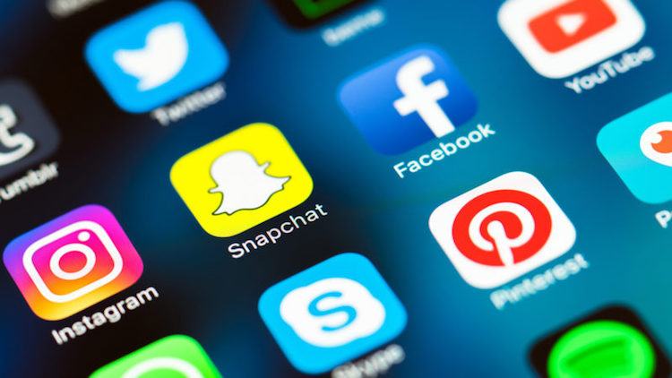

Social media has become a very important issue in the past decade and is still rising. People spend on average more than two hours a day on social media like Twitter, Facebook and Instagram, though we state that our time is the most valuable thing in life.
Because of the big role it plays in our everyday life, it is essential to understand how it works an what social media changes in our life. Not just in our spare time, but also during working hours.
We are organizing a symposium on social media because we understand the importance of this phenomenon. We have invited respected speakers to join our effort. If you are interested like we are, please register. We hope to see you on the 13th of april at the Acadamy Building in Groningen.
